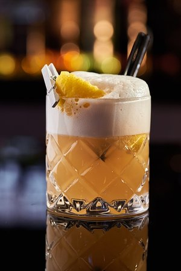
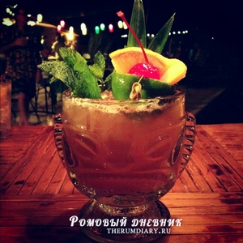

Виски сауэр»
Старейшее историческое упоминание о коктейле «Виски сауэр» — публикация в газете Висконсина Waukesha Plain Dealer (США) в 1870 году[2][3].

Май Тай
Согласно легенде, название коктейля появилось благодаря гостям из Таити, впервые попробовавшим его — «Mai tai roa ae» — означало «не от мира сего» на их языке. ... В сборник IBA коктейль Май Тай вошёл в 1987 году.

© Поджаров Алексей Валерьевич